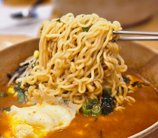
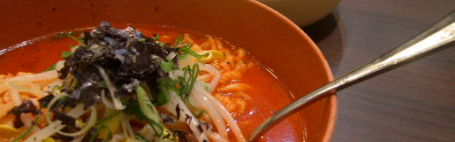
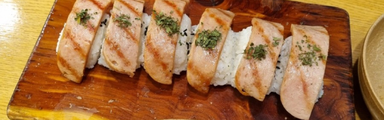
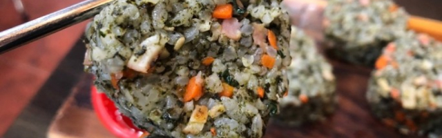
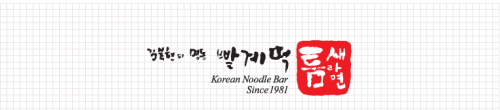
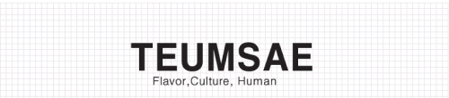

틈새브랜드
창업자들의 라면장사 이야기

- Tumsae Brand story
- 고추가루와 계란, 떡이 들어간 ‘틈새라면’의 ‘빨계떡’은 김복현 사장이 직접 개발한 고추가루와 물의 양, 불의 강도 정확한 타이밍까지 오랜시간 세밀한 연구에서 나온 ‘틈새라면’만의 노하우이기도 합니다.
-

- 소자본 창업 아이템, 시대의 흐름에서 읽는다.
- 소자본 창업은 시대나 상황에 따라 매우 민감하게 변화한다. 소자본 창업일수록 유행에 민감 하다는 말이다. 따라서 새롭게 면하고 있는 주위 사람들을 잘 살피면, 시대의 흐름을 읽고 발 빠르게 대처하는 법을 찾을 수 있다.
-

- 번화가의 뒷골목을 공략하라.
- 특유의 맛으로 이름을 날리는 집은 대부분 뒷골목이나 산 속에 자리 잡고 있다. 가진 것 없이 시작했다는 증거다. 이런 가게의 사장들은 처음엔 이름도 없이 작고 볼품없는 가게에서 하루 세끼 밥만 먹어도 감사하다.
-

- 남들과 반대로 해라.
- 일반인들의 상식을 깨뜨리는 역발상 마케팅은 소비자들의 눈과 귀를 자사의 상품에 이끄는 힘을 가지고 있다. 예컨대 '화장품은 바르는 것' 이라는 고정관념을 깨뜨린 '먹는 화장품', '냉장고를 자주 이용하는...
-
로고 및 심벌
CI(Corporate ldentity)
BI(Brand identity)
